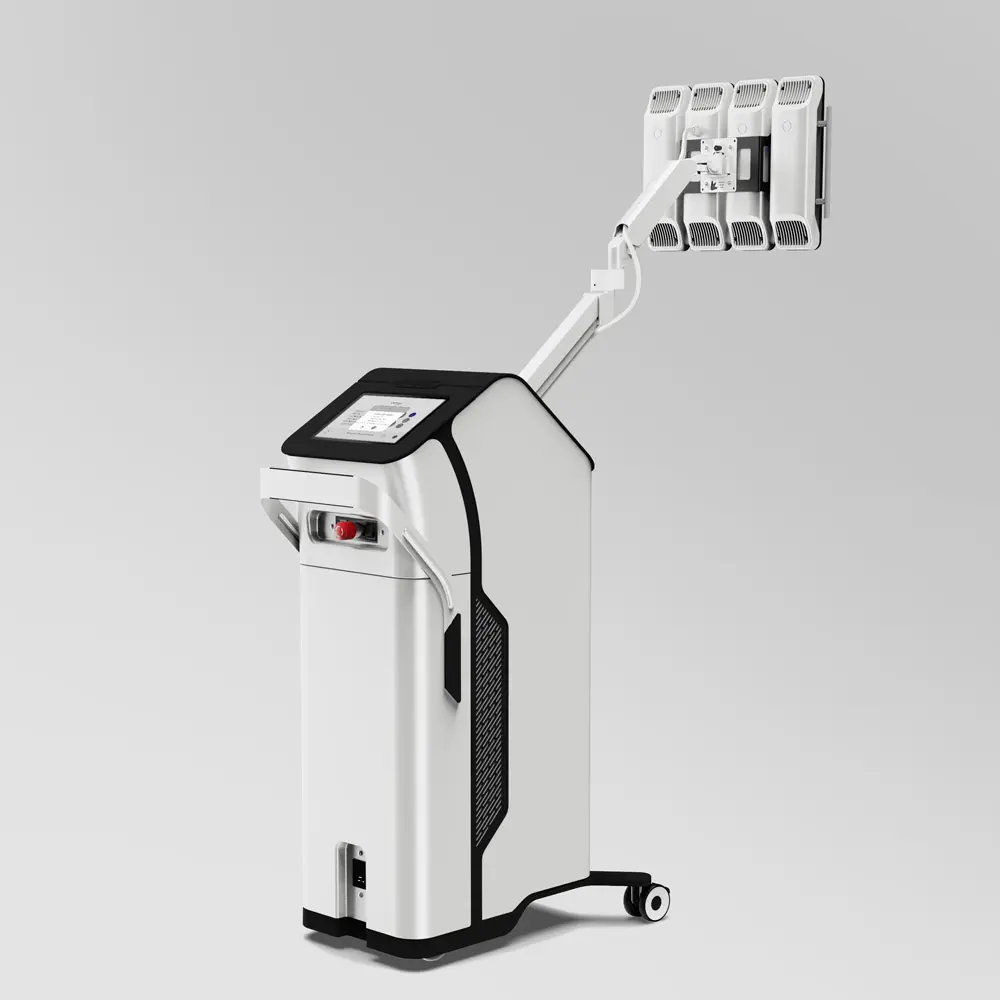
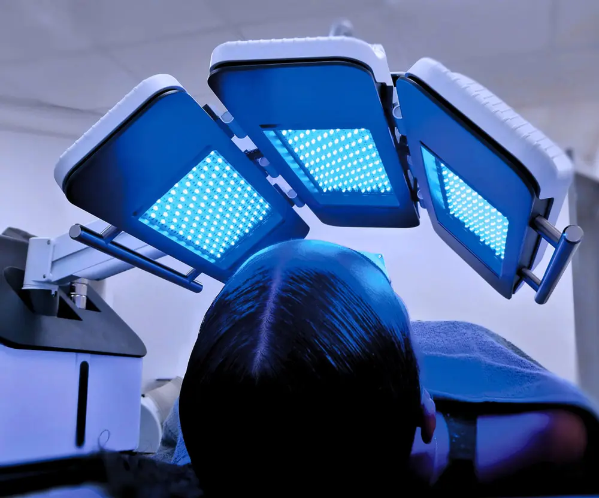
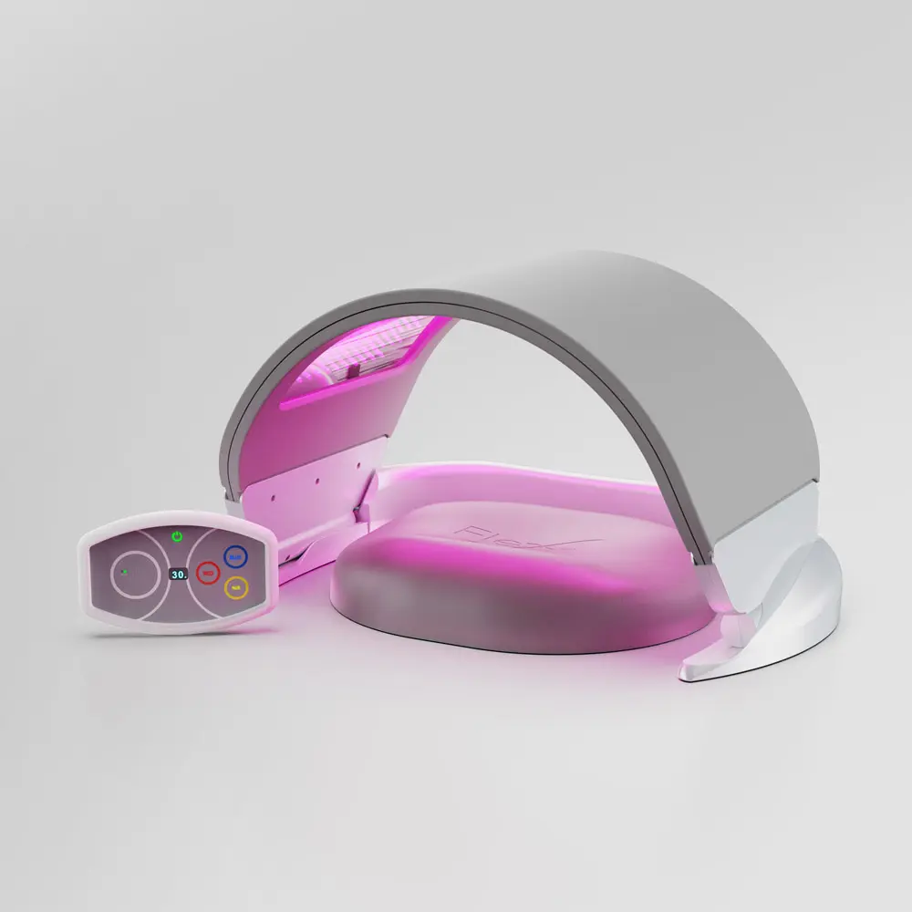
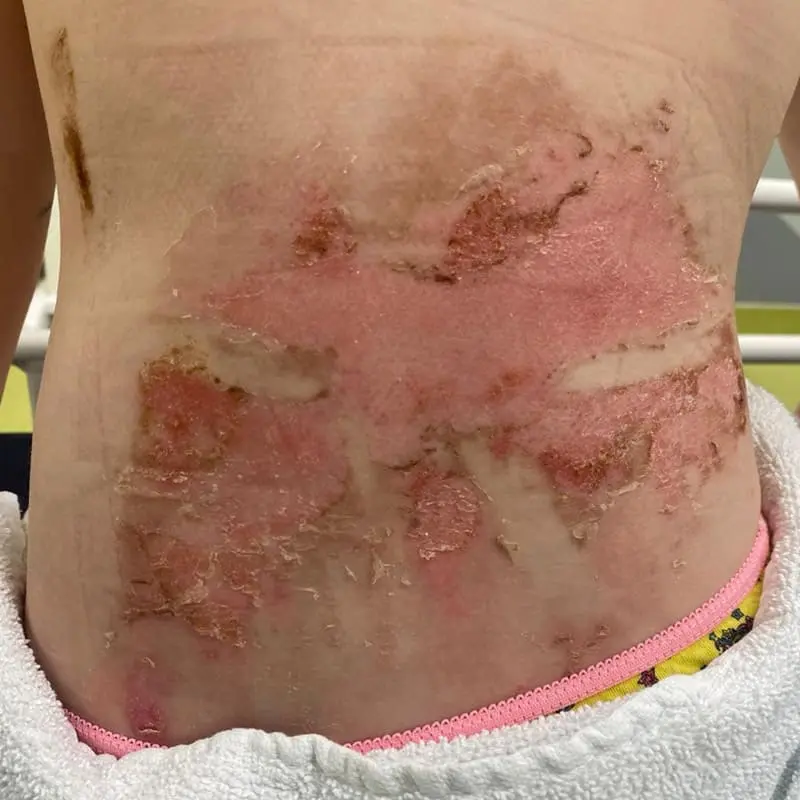
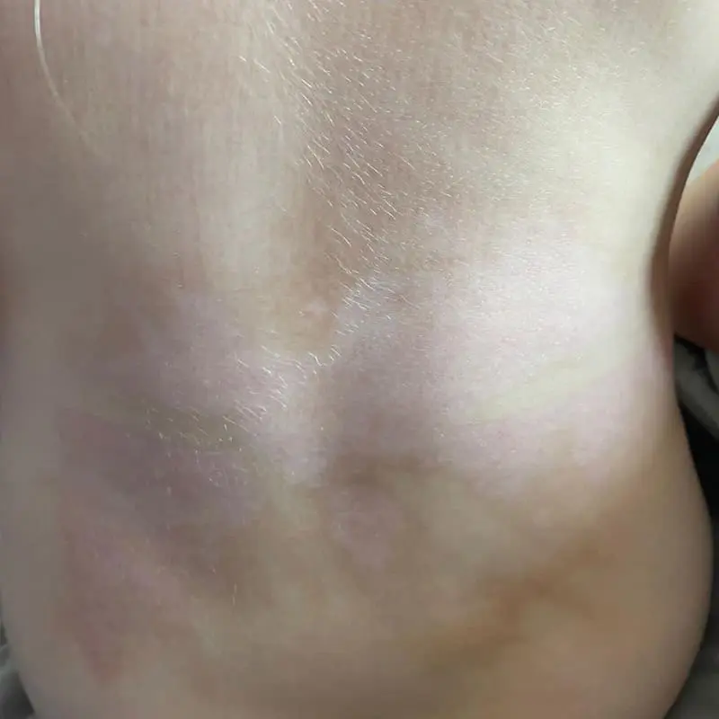
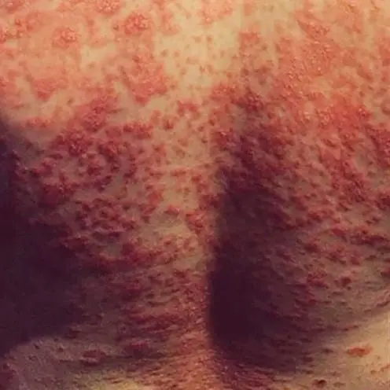
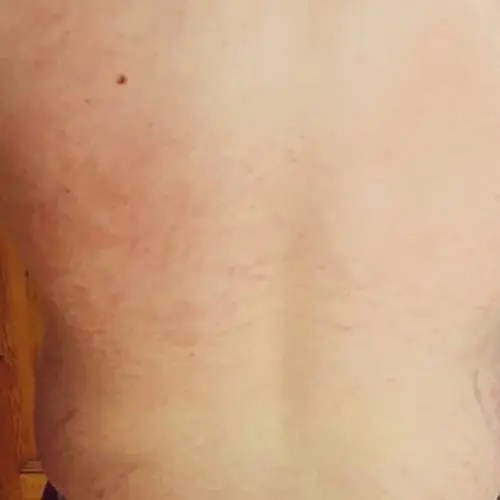
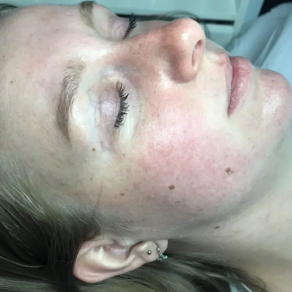

Países
Presença global levando inovação em fotobiomodulação ao redor do mundo.
Líder mundial em fotobiomodulação desde 2012
Tecnologia britânica 5x premiada internacionalmente, presente em 35 países — do Reino Unido para a sua clínica.
A Dermalux
Presença global levando inovação em fotobiomodulação ao redor do mundo.
Fabricante original de LED médico, com excelência britânica reconhecida.
Engenharia e produção no Reino Unido, do design ao controle de qualidade.
Departamento interno de Pesquisa & Desenvolvimento dedicado à evolução da luz.
A tecnologia
A luz certa, na profundidade certa. Cada comprimento de onda atua na mitocôndria — o centro de energia da célula — aumentando a produção de ATP e ativando processos reais de reparo.
Ação antibacteriana. Indicada para acne e controle da inflamação.
Portfólio & indicações
01 — Uso médico exclusivo
A fotobiomodulação mais potente do mundo.
Quatro módulos ajustáveis para grandes áreas, três comprimentos de onda por painel e resfriamento LED patenteado. Braço articulado, interface totalmente personalizável e a segurança de um dispositivo médico Classe IIa.Quatro módulos ajustáveis, três ondas por painel e resfriamento LED patenteado. Potência máxima com segurança Classe IIa.

02 — Versatilidade clínica
Transformação através da inovação.
Os comprimentos de onda mais comprovados clinicamente — Azul 415nm, Vermelho 633nm e NIR 830nm — para rosto, couro cabeludo e corpo. Protocolos avançados, painel ajustável e software atualizável que protege seu investimento.Azul 415nm, Vermelho 633nm e NIR 830nm em um design versátil para rosto, couro cabeludo e corpo, com protocolos avançados.

03 — Potência portátil
O padrão ouro em fotobiomodulação portátil.
Matriz de LED flexível com a mesma tecnologia exclusiva do Tri-Wave MD. Pelo menos 3x mais potente que outros dispositivos portáteis, com certificação CE médica, aprovação FDA e resultados sustentados por centenas de estudos de caso.A mesma tecnologia do Tri-Wave MD em formato portátil: pelo menos 3x mais potente, com certificação CE médica e aprovação FDA.

Certificações
Resultados
Arraste a linha de luz sobre cada foto para revelar o antes e depois de tratamentos reais.
Imagens gentilmente cedidas por Homeira Darbandi Skincare, Teerã


Imagens gentilmente cedidas por Opium Skin and Beauty, Tullamore


Imagens gentilmente cedidas por Opium Skin and Beauty, Tullamore

Imagens gentilmente cedidas por Clearskin Huidinstituut, Países Baixos
Quem confia
“A diferença que ele faz no conforto, na cicatrização e no bem-estar é visível já nas primeiras sessões. Depois que você vê a evolução clínica com ele, simplesmente não dá para voltar atrás.”
Dra. Patrícia Leite
Cirurgiã Plástica
“Hoje consigo associar regeneração celular, saúde e beleza para os meus pacientes. É versátil, totalmente personalizável e sem downtime — perfeito tanto para o médico quanto para o paciente.”
Dra. Amanda Todt
Dermatologista
“Dermalux atua em níveis celulares, favorecendo a regeneração e o reparo tecidual. O valor clínico está justamente na versatilidade — encaixa com inteligência no fluxo do consultório.”
Dra. Taiz Campbell
Dermatologista
Dermalux no Brasil